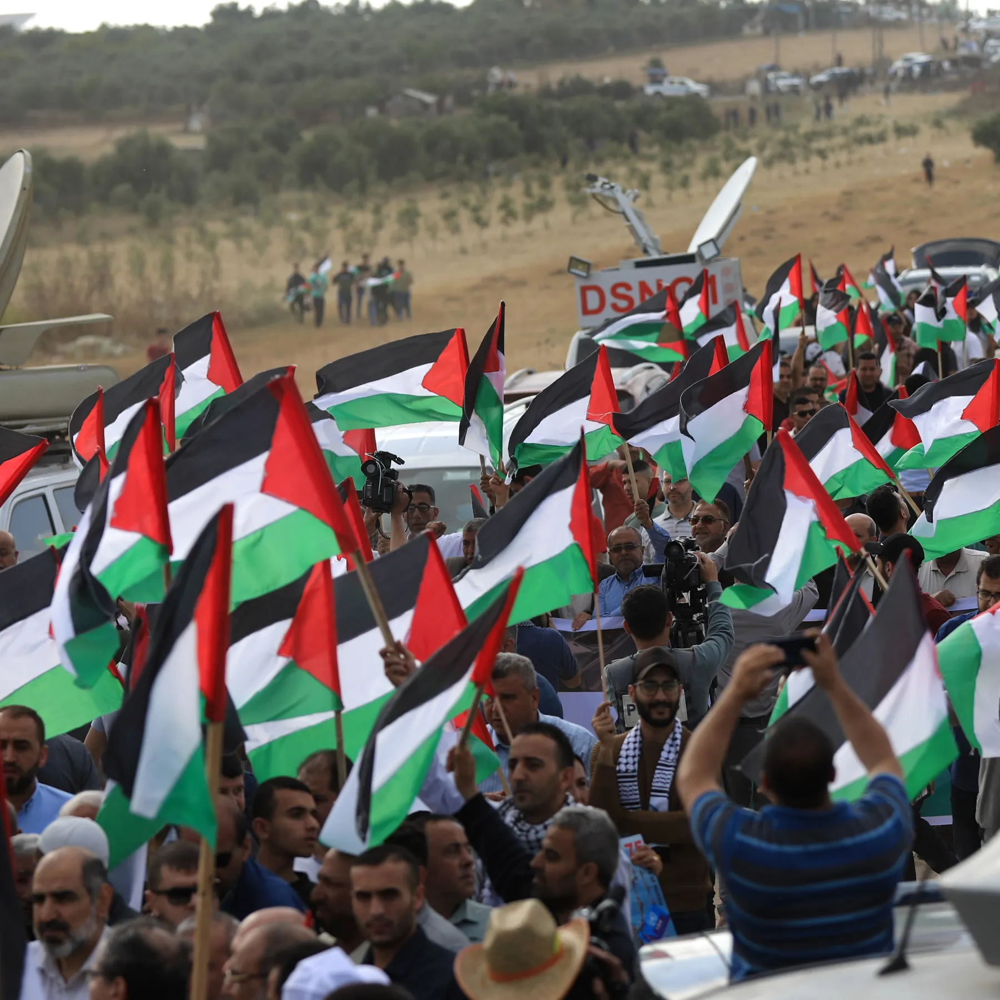

Mohammed Helow is a dedicated Computer Science student with a passion for learning and problem-solving. Currently pursuing a Bachelor's degree, Mohammed is actively engaged in coursework ranging from programming and data analysis to machine learning and software development. His academic journey includes a strong interest in AI principles and techniques, evident from his coursework and projects focused on decision trees, neural networks, and algorithm implementations. Mohammed also values practical experience, seeking internships and hands-on opportunities to apply his skills in real-world settings.
Outside of academics, Mohammed is involved in various interests, including finance and cryptocurrency, where he explores investment opportunities and market trends. He is also committed to family and community, as seen in his efforts to support relatives affected by conflict and his involvement in charitable campaigns. Mohammed's approach to learning is systematic and thorough, often seeking step-by-step guidance in technical subjects while maintaining a clear focus on his career goals in technology and innovation.
Mohammed Helow is originally from Gaza, and his background shapes his perspective on many aspects of his life, including his commitment to family and his drive for success. Despite the challenges of being far from home, Mohammed remains deeply connected to his roots, often working on initiatives to support his family members who have been affected by the ongoing conflict. His resilience and determination reflect the strength of his heritage, motivating him to succeed academically and professionally in the field of technology.
Free Palestine
